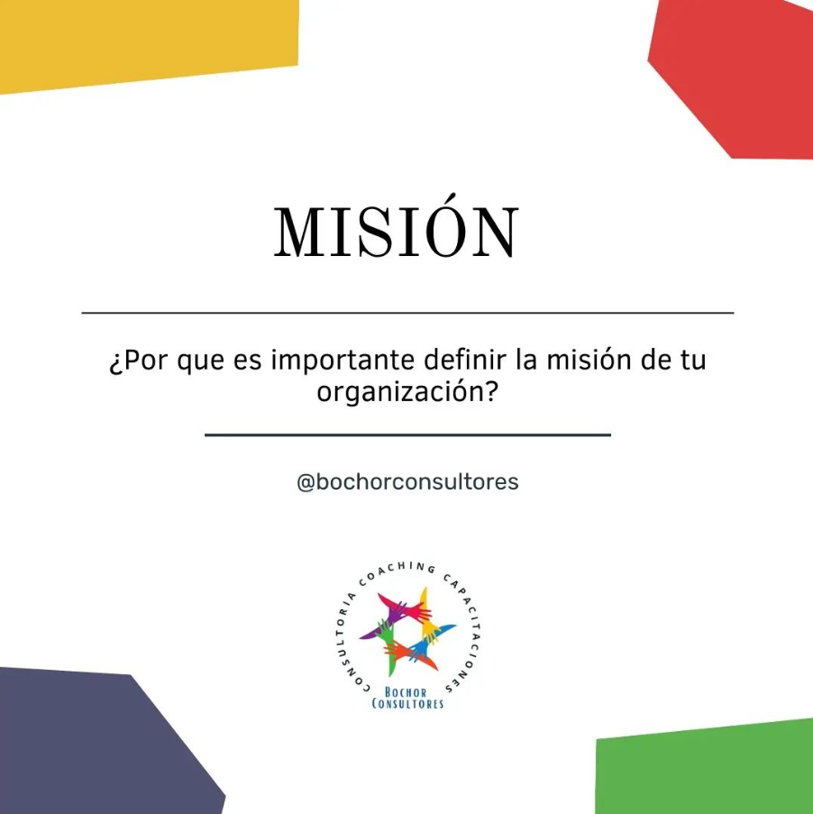
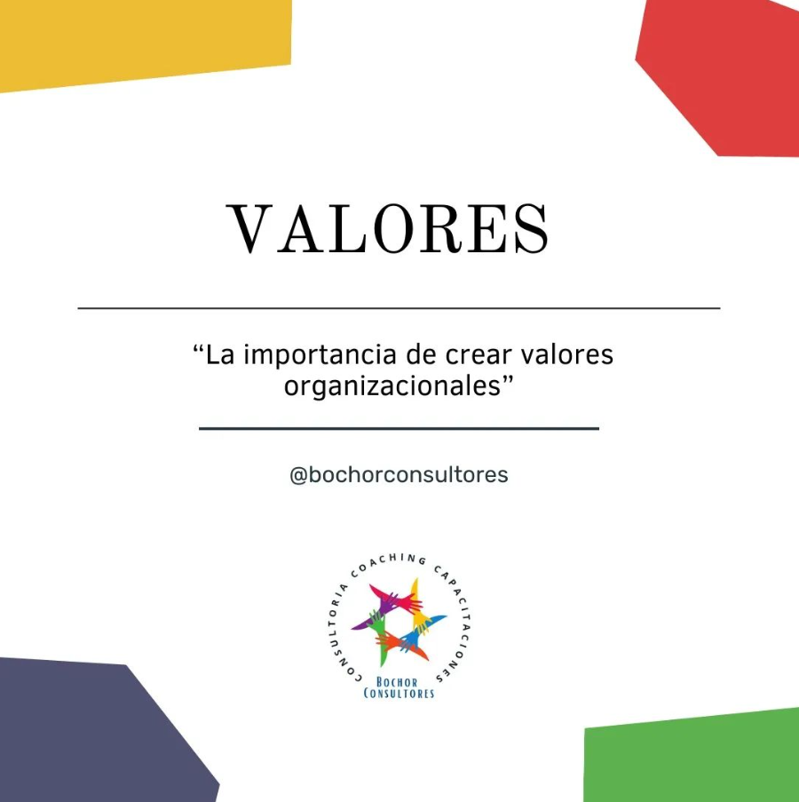

Camila Bochor
(Abogada)
Camila, con una sólida formación legal y una trayectoria sobresaliente, se distingue por su enfoque centrado en el cliente. Su habilidad para abordar casos complejos con integridad y determinación le ha ganado el respeto de colegas y clientes por igual.
Marcelo Bochor
(CEO)
En el corazón de nuestra empresa, se encuentra un líder visionario y apasionado que guía nuestro equipo hacia el éxito. Marcelo Bochor, nuestro CEO y fundador, personifica la dedicación, la innovación y el compromiso con la excelencia que son los pilares de nuestra empresa.
¿Por qué elegirnos?
- Porque entendemos que cada empresa es única y nos adaptamos a sus especificidades y necesidades individuales.
- Porque estamos comprometidos con la mejora continua y siempre buscamos formas de optimizar nuestros procesos y servicios.
- Porque nos apasiona lo que hacemos y nos esforzamos por superar las expectativas de nuestros clientes en cada proyecto.
- Porque creemos en la importancia de la responsabilidad social empresarial y nos comprometemos a contribuir positivamente a la comunidad.
- Porque nos comprometemos a mantener una comunicación abierta y transparente en cada etapa de nuestro trabajo juntos.
- Porque priorizamos la calidad sobre la cantidad en nuestras búsquedas de talento, asegurando que cada candidato sea cuidadosamente evaluado y seleccionado.
- Porque nos esforzamos por construir relaciones a largo plazo basadas en la confianza mutua y el éxito compartido.
- Porque valoramos la diversidad y la inclusión en todas nuestras prácticas de reclutamiento y selección.
La misión resume la esencia de la organización, su razón de ser y sus objetivos estratégicos. Es de vital importancia definir con claridad la misión ya que nos permite conocer el camino que debemos recorrer para completar nuestras metas, determinar el propósito es vital ya que nos garantiza identificar aquellos aspectos claves en los cuales debemos trabajar. A la hora de crear nuestra misión debemos responder preguntas como: ¿Qué hacemos? ¿Para quién lo hacemos? ¿Hacia donde nos dirigimos? ¿Cuál es nuestro propósito? ¿Por qué lo hacemos? Responder estas preguntas nos ayuda a tener un punto de partida, proporcionando mayor claridad en la concreción de nuestra meta final.
Consideraciones a la hora de crear y diseñar la visión de tu organización. ⚠️ Es un método de diseñar el futuro. Es el punto de partida de las acciones que debemos tomar hacia el objetivo deseado. Desde el presente imagino quien debo ser para lograr el futuro que imagino. Visualizando ese futuro que quiero, trabajo hoy en los recursos que necesito para conseguirlo. Desafío todo lo que hoy me tracciona del pasado.
Los valores son fundamentales ya que pueden ayudar a definir el perfil de una organización y ayudarla a distinguirse de las demás, otorgando un enfoque conciso y certero sobre el propósito y compromiso que se maneja en dicha entidad. A los valores se los distingue como ideales y convicciones que fomentan la cultura de cada organización, a través de ellos se pueden establecer criterios y convicciones que debe tener cada miembro que conforma la organización, estar presentes en toda la empresa en forma transversal y ser alineados durante las etapas de incorporación de nuevos puestos laborales. Entre los principales valores que podemos destacar son: Honestidad, orientación al cliente, pasión, colaboración, diversidad, compromiso, respeto, entre otros.
